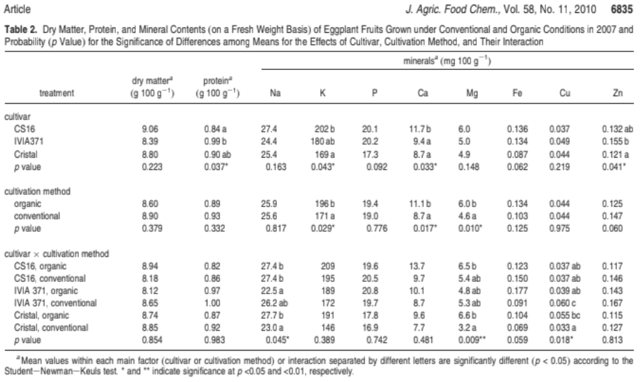
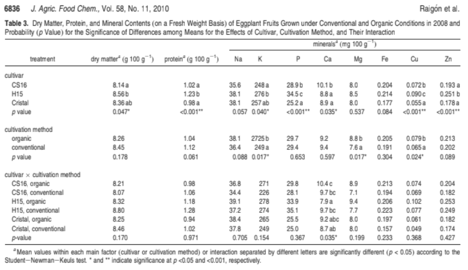
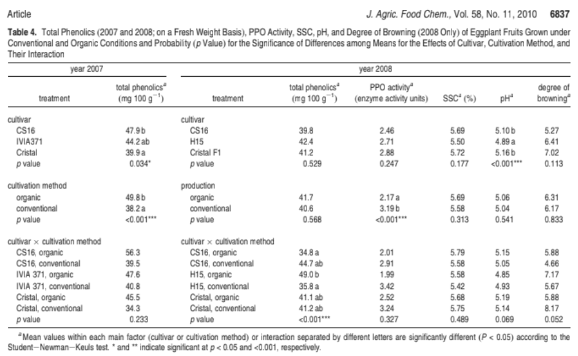

He buscat informació primaria académica a Google acadèmic
He trobat un article cientific que compara la composició química de la alberginia coventional i la alberginia ecològica i os posaré un enllaç de l'article de Raigon et al., 2010 i una imatge de l'article que demostri quina alberginia és:
  A la taula 2 podem veure els resultats de les alberginies de l'any 2007 i a la taula 3 del 2008, podem veure que alguns minerals són una miqueta superiors en el ecològic, com el calci el potasi i el magnesi al 2007 i magnesi potasi i coure al 2008
A la taula 4 podem veure que no hi ha diferències en polifenols totals (p>0,05) ,però si hi ha diferències a l'activitat antioxidant major en ecològic (p<0.05)